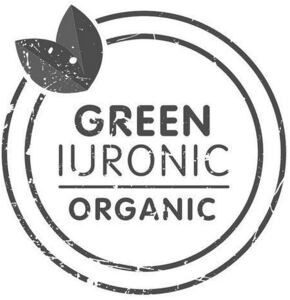

Trade Mark Journal No.2025/027 4 July 2025
WO0000001849215 (1,3,5,35)
Office of origin: European Union Intellectual Property Office (EUIPO)
Date of International Registration:14 November 2024
Date of designation in the UK:
14 November 2024

International priority date claimed: 17 May 2024
(European Union Intellectual Property Office (EUIPO))
(019028711)
- Class 1
- Industrial chemicals; botanical and plant extracts for industrial use; ferments for industrial use; chemicals intended for food preservation; chemical raw materials; semi-finished chemicals; biochemicals; chemical compounds; organic compounds; chemical additives; plant extracts; botanical extracts; herbal extracts other than essential oils; chemical intermediates; chemicals; biochemicals; biological substances; active chemical ingredients; chemical formulations; chemicals derived from botanical and plant extracts; chemicals derived from fermentation; biochemicals derived from botanical and plant extracts; biochemicals derived from fermentation; biological substances derived from botanical and plant extracts; biological substances derived from fermentation; fermentation extracts for industrial use; raw materials derived from fermentation; cultures of microorganisms, bacteria and bacterial preparations; yeast extracts, yeasts, enzymes, oils; all the above goods for use in the manufacture of pharmaceuticals, veterinary products, animal feeds, dietetic substances for medical use, dietetic compounds for human and animal use, dietetic foods, dietary supplements, food supplements, sanitary preparations, baby foods, nutraceuticals used as supplements, medical preparations, medical devices, dietary supplements for medical use, food supplements for medical use, food supplements not for therapeutic use, dietary supplements not for therapeutic use, dietary supplements with cosmetic effect, dermatological preparations for medical use, medicated preparations for skin treatment, medicated lotions for skin treatment, medicated creams for skin treatment, medicated gels for skin treatment, medicated oils for skin treatment, antiseptic preparations for wound care, pharmaceutical products for skin care, cosmetics, cleansers for intimate personal hygiene purposes, non-medicated, cosmetic preparations for skin care, essences for skin care, non-medicated oils for skin care, cosmetic skin masks, anti-aging preparations for the skin, skin smoothing emulsions, non-medicated skin lotions, non-medicated skin balms, skin care exfoliants, non-medicated skin emollients, non-medicated skin creams, non-medicated skin serums, skin care mousse, anti-wrinkle preparations for skin care, cosmetic preparations for skin regeneration, essential oils for skin care, non-medicated skin care preparations; all the aforesaid being organic or containing organic goods.
- Class 3
- Cosmetics; skin whitening creams; cosmetic preparations for skin care; non-medicated skin creams; anti-wrinkle preparations for skin care; anti-ageing skin preparations; cosmetic preparations for skin regeneration; non-medicated skin balms; non-medicated skin emollients; skin smoothing emulsions; skin care exfoliants; essences for skin care; non-medicated skin lotions; cosmetic skin masks; skin care mousse; essential oils for skincare; non-medicated skin care oils; detergent products for personal hygiene; non-medicated skin care products; non-medicated skin serums; all the aforesaid being organic or containing organic goods.
- Class 5
- Pharmaceuticals, medical and veterinary preparations; sanitary preparations for medical purposes; dietetic food and substances adapted for medical or veterinary use, food for babies; dietary supplements for human beings and animals; dietary supplements and dietetic preparations; sanitary preparations and articles; nutritional supplements for medical use; dietetic foods adapted for medical use; dietetic beverages adapted for medical use; dietary supplements for humans, not for medical use; vitamin supplements; nutritional supplements; medicated food supplements; protein dietary supplements; vitamin and mineral supplements; dietary supplements for infants; protein powder dietary supplements; whey protein dietary supplements; food supplements in liquid form; probiotic supplements; anti-oxidant supplements; prebiotic supplements; mineral dietary supplements; dietary supplements in powder form; health food supplements for persons with special dietary requirements; pastilles for pharmaceutical purposes; cachets for medicinal purposes; syrups for pharmaceutical purposes; dietetic substances adapted for medical use; pharmaceuticals and natural remedies; pharmaceutical preparations and substances; nutraceutical preparations for therapeutic or medical purposes; nutraceuticals for use as a dietary supplement; dietary supplements and food supplements with a cosmetic effect; mineral salts for medical use; fats for medical use; antioxidants; regulatory proteins for medical and pharmaceutical use; herbal and plant extracts for medical and pharmaceutical use; medicinal herbs; ferments for medical and pharmaceutical use; probiotic bacteria, pharmaceuticals containing lactic acid bacteria, pharmaceuticals containing bifidobacteria; probiotic bacterial formulations for medical use; micro-organisms for medical and pharmaceutical use; probiotic preparations and bacterial preparations for medical and pharmaceutical use; dietary plant fibres; oils for medicinal use; nutritional additives for medical use in the nature of natural food extracts derived from vegetables, legumes, plants; food products enriched with nutrients and dietary elements adapted for medical purposes; botanical and plant extracts; plant extracts; herbal extracts; all the aforesaid being organic or containing organic goods.
- Class 35
- Online retail services, retail and wholesale services, marketing services, advertising services, presentation of goods on communication media for retail purposes, arranging and conducting of promotional events, all relating to the following goods: industrial chemicals, botanical and plant extracts for industrial use, ferments for industrial use, chemicals intended for food preservation, all the aforesaid being organic or containing organic goods; online retail services, retail and wholesale services, marketing services, advertising services, presentation of goods on communication media for retail purposes, arranging and conducting of promotional events, all relating to the following goods: chemical raw materials, semi-finished chemicals, biochemicals, chemical compounds, organic compounds, chemical additives, plant extracts, botanical extracts, herbal extracts other than essential oils, all the aforesaid being organic or containing organic goods; online retail services, retail and wholesale services, marketing services, advertising services, presentation of goods on communication media for retail purposes, arranging and conducting of promotional events, all relating to the following goods: chemical intermediates, chemicals, biochemicals, biological substances, active chemical ingredients, chemical formulations, chemicals derived from botanical and plant extracts, chemicals derived from fermentation, all the aforesaid being organic or containing organic goods; online retail services, retail and wholesale services, marketing services, advertising services, presentation of goods on communication media for retail purposes, arranging and conducting of promotional events, all relating to the following goods: biochemicals derived from botanical and plant extracts, biochemicals derived from fermentation, biological substances derived from botanical and plant extracts, biological substances derived from fermentation, fermentation extracts for industrial use, all the aforesaid being organic or containing organic goods; online retail services, retail and wholesale services, marketing services, advertising services, presentation of goods on communication media for retail purposes, arranging and conducting of promotional events, all relating to the following goods: raw materials derived from fermentation, cultures of microorganisms, bacteria and bacterial preparations, yeast extracts, yeasts, enzymes, oils, all the aforesaid being organic or containing organic goods; online retail services, retail and wholesale services, marketing services, advertising services, presentation of goods on communication media for retail purposes, arranging and conducting of promotional events, all relating to the following goods: pharmaceuticals, veterinary products, animal feeds, dietetic substances for medical use, dietetic compounds for human and animal use, dietetic foods, all the aforesaid being organic or containing organic goods; online retail services, retail and wholesale services, marketing services, advertising services, presentation of goods on communication media for retail purposes, arranging and conducting of promotional events, all relating to the following goods: dietary supplements, food supplements, sanitary preparations, baby foods, nutraceuticals used as supplements, medical preparations, all the aforesaid being organic or containing organic goods; online retail services, retail and wholesale services, marketing services, advertising services, presentation of goods on communication media for retail purposes, arranging and conducting of promotional events, all relating to the following goods: dietary supplements for medical use, food supplements for medical use, all the aforesaid being organic or containing organic goods; online retail services, retail and wholesale services, marketing services, advertising services, presentation of goods on communication media for retail purposes, arranging and conducting of promotional events, all relating to the following goods: food supplements not for therapeutic use and dietary supplements not for therapeutic use, dietary supplements with cosmetic effect, dermatological preparations for medical use, all the aforesaid being organic or containing organic goods; online retail services, retail and wholesale services, marketing services, advertising services, presentation of goods on communication media for retail purposes, arranging and conducting of promotional events, all relating to the following goods: medicated preparations for skin treatment, medicated lotions for skin treatment, medicated creams for skin treatment, medicated gels for skin treatment, medicated oils for skin treatment, all the aforesaid being organic or containing organic goods; online retail services, retail and wholesale services, marketing services, advertising services, presentation of goods on communication media for retail purposes, arranging and conducting of promotional events, all relating to the following goods: antiseptic preparations for wound care, pharmaceutical products for skin care, all the aforesaid being organic or containing organic goods; online retail services, retail and wholesale services, marketing services, advertising services, presentation of goods on communication media for retail purposes, arranging and conducting of promotional events, all relating to the following goods: chemical raw materials, semi-finished chemicals, biochemicals, chemical compounds, organic compounds, chemical additives, all the aforesaid being organic or containing organic goods; online retail services, retail and wholesale services, marketing services, advertising services, presentation of goods on communication media for retail purposes, arranging and conducting of promotional events, all relating to the following goods: plant extracts, botanical extracts, herbal extracts other than essential oils, chemical intermediates, chemicals, biochemicals, biological substances, all the aforesaid being organic or containing organic goods; online retail services, retail and wholesale services, marketing services, advertising services, presentation of goods on communication media for retail purposes, arranging and conducting of promotional events, all relating to the following goods: active chemical ingredients, chemical formulations, chemicals derived from botanical and plant extracts, chemicals derived from fermentation, biochemicals derived from botanical and plant extracts, biochemicals derived from fermentation, all the aforesaid being organic or containing organic goods online retail services, retail and wholesale services, marketing services, advertising services, presentation of goods on communication media for retail purposes, arranging and conducting of promotional events, all relating to the following goods: biological substances derived from botanical and plant extracts, biological substances derived from fermentation, fermentation extracts for industrial use, raw materials derived from fermentation,,all the aforesaid being organic or containing organic goods; online retail services, retail and wholesale services, marketing services, advertising services, presentation of goods on communication media for retail purposes, arranging and conducting of promotional events, all relating to the following goods: cultures of microorganisms, bacteria and bacterial preparations, yeast extracts, yeasts, enzymes, oils, all the aforesaid being organic or containing organic goods; online retail services, retail and wholesale services, marketing services, advertising services, presentation of goods on communication media for retail purposes, arranging and conducting of promotional events, all relating to the following goods: cosmetics, cleansers for intimate personal hygiene purposes, non-medicated, cosmetic preparations for skin care, essences for skin care, non-medicated oils for skin care, cosmetic skin masks, anti-aging preparations for the skin, all the aforesaid being organic or containing organic goods; online retail services, retail and wholesale services, marketing services, advertising services, presentation of goods on communication media for retail purposes, arranging and conducting of promotional events, all relating to the following goods: skin smoothing emulsions, non-medicated skin lotions, non-medicated skin balms, skin care exfoliants, nonmedicated skin emollients, non-medicated skin creams, non-medicated skin serums, skin care mousse, all the aforesaid being organic or containing organic goods; online retail services, retail and wholesale services, marketing services, advertising services, presentation of goods on communication media for retail purposes, arranging and conducting of promotional events, all relating to the following goods: anti-wrinkle preparations for skin care, cosmetic preparations for skin regeneration, essential oils for skin care, non-medicated skin care preparations, all the aforesaid being organic or containing organic goods; online retail services, retail and wholesale services, marketing services, advertising services, presentation of goods on communication media for retail purposes, arranging and conducting of promotional events, all relating to the following goods: cosmetics, skin whitening creams, cosmetic preparations for skin care, non-medicated skin creams, anti-wrinkle preparations for skin care, anti-ageing skin preparations, cosmetic preparations for skin regeneration, non-medicated skin balms, all the aforesaid being organic or containing organic goods; online retailing services, retailing and wholesaling services online retail services, retail and wholesale services, marketing services, advertising services, presentation of goods on communication media for retail purposes, arranging and conducting of promotional events, all relating to the following goods: non-medicated skin emollients, skin smoothing emulsions, skin care exfoliants, essences for skin care, non-medicated skin lotions, cosmetic skin masks, skin care mousse, all the aforesaid being organic or containing organic goods; online retailing services, retailing and wholesaling services online retail services, retail and wholesale services, marketing services, advertising services, presentation of goods on communication media for retail purposes, arranging and conducting of promotional events, all relating to the following goods: essential oils for skincare, non-medicated skin care oils, detergent products for personal hygiene, nonmedicated skin care products, non-medicated skin serums, all the aforesaid being organic or containing organic goods; online retailing services, retailing and wholesaling services online retail services, retail and wholesale services, marketing services, advertising services, presentation of goods on communication media for retail purposes, arranging and conducting of promotional events, all relating to the following goods: pharmaceuticals, medical and veterinary preparations, sanitary preparations for medical purposes, dietetic food and substances adapted for medical or veterinary use, food for babies, dietary supplements for human beings and animals, all the aforesaid being organic or containing organic goods; online retailing services, retailing and wholesaling services online retail services, retail and wholesale services, marketing services, advertising services, presentation of goods on communication media for retail purposes, arranging and conducting of promotional events, all relating to the following goods: dietary supplements and dietetic preparations, sanitary preparations and articles, nutritional supplements for medical use, dietetic foods adapted for medical use, dietetic beverages adapted for medical use, all the aforesaid being organic or containing organic goods; online retail services, retail and wholesale services, marketing services, advertising services, presentation of goods on communication media for retail purposes, arranging and conducting of promotional events, all relating to the following goods: dietary supplements for humans, not for medical use, vitamin supplements, nutritional supplements, medicated food supplements, protein dietary supplements, vitamin and mineral supplements, dietary supplements for infants, all the aforesaid being organic or containing organic goods; online retailing services, retailing and wholesaling services online retail services, retail and wholesale services, marketing services, advertising services, presentation of goods on communication media for retail purposes, arranging and conducting of promotional events, all relating to the following goods: protein powder dietary supplements, whey protein dietary supplements, food supplements in liquid form, probiotic supplements, anti-oxidant supplements, prebiotic supplements, mineral dietary supplements, all the aforesaid being organic or containing organic goods; online retail services, retail and wholesale services, marketing services, advertising services, presentation of goods on communication media for retail purposes, arranging and conducting of promotional events, all relating to the following goods: dietary supplements in powder form, health food supplements for persons with special dietary requirements, pastilles for pharmaceutical purposes, cachets for medicinal purposes, syrups for pharmaceutical purposes, all the aforesaid being organic or containing organic goods; online retailing services, retailing and wholesaling services online retail services, retail and wholesale services, marketing services, advertising services, presentation of goods on communication media for retail purposes, arranging and conducting of promotional events, all relating to the following goods: dietetic substances adapted for medical use, pharmaceuticals and natural remedies, pharmaceutical preparations and substances, nutraceutical preparations for therapeutic or medical purposes, nutraceuticals for use as a dietary supplement, all the aforesaid being organic or containing organic goods; online retail services, retail and wholesale services, marketing services, advertising services, presentation of goods on communication media for retail purposes, arranging and conducting of promotional events, all relating to the following goods: dietary supplements, food supplements with a cosmetic effect, mineral salts for medical use, fats for medical use, antioxidants, all the aforesaid being organic or containing organic goods; online retail services, retail and wholesale services, marketing services, advertising services, presentation of goods on communication media for retail purposes, arranging and conducting of promotional events, all relating to the following goods: regulatory proteins for medical and pharmaceutical use, all the aforesaid being organic or containing organic goods; online retail services, retail and wholesale services, marketing services, advertising services, presentation of goods on communication media for retail purposes, arranging and conducting of promotional events, all relating to the following goods: herbal and plant extracts for medical and pharmaceutical use, medicinal herbs, ferments for medical and pharmaceutical use, probiotic bacteria, lactic acid bacteria, bifidobacteria for medical and pharmaceutical use, all the aforesaid being organic or containing organic goods; online retail services, retail and wholesale services, marketing services, advertising services, presentation of goods on communication media for retail purposes, arranging and conducting of promotional events, all relating to the following goods: probiotic bacterial formulations for medical use, micro-organisms for medical and pharmaceutical use, all the aforesaid being organic or containing organic goods; online retail services, retail and wholesale services, marketing services, advertising services, presentation of goods on communication media for retail purposes, arranging and conducting of promotional events, all relating to the following goods: probiotic preparations and bacterial preparations for medical and pharmaceutical use, dietary plant fibres, oils for medicinal use; all the aforesaid being organic or containing organic goods; online retail services, retail and wholesale services, marketing services, advertising services, presentation of goods on communication media for retail purposes, arranging and conducting of promotional events, all relating to the following goods: nutritional additives for medical use in the nature of natural food extracts derived from vegetables, legumes, plants, probiotic supplements, food products enriched with nutrients and dietary elements adapted for medical purposes, all the aforesaid being organic or containing organic goods; online retail services, retail and wholesale services, marketing services, advertising services, presentation of goods on communication media for retail purposes, arranging and conducting of promotional events, all relating to the following goods: botanical and plant extracts, plant extracts, herbal extracts, all the aforesaid goods being organic or containing organic goods.
VIVATIS Pharma GmbH
Representative: Gill Jennings & Every LLP, The Broadgate Tower, 20 Primrose Street London EC2A 2ES UNITED KINGDOM